Monte Carlo Sampling Distribution for the Elements of the Standardized Matrix of Lagged Coefficients Over a Specific Time Interval or a Range of Time Intervals
Source:R/cTMed-mc-beta-std.R
MCBetaStd.RdThis function generates a Monte Carlo method sampling distribution for the elements of the standardized matrix of lagged coefficients \(\boldsymbol{\beta}\) over a specific time interval \(\Delta t\) or a range of time intervals using the first-order stochastic differential equation model drift matrix \(\boldsymbol{\Phi}\) and process noise covariance matrix \(\boldsymbol{\Sigma}\).
Usage
MCBetaStd(
phi,
vcov_phi_vec,
sigma,
vcov_sigma_vech,
delta_t,
R,
test_phi = TRUE,
ncores = NULL,
seed = NULL
)Arguments
- phi
Numeric matrix. The drift matrix (\(\boldsymbol{\Phi}\)).
phishould have row and column names pertaining to the variables in the system.- vcov_phi_vec
Numeric matrix. The sampling variance-covariance matrix of \(\mathrm{vec} \left( \boldsymbol{\Phi} \right)\).
- sigma
Numeric matrix. The process noise covariance matrix (\(\boldsymbol{\Sigma}\)).
- vcov_sigma_vech
Numeric matrix. The sampling variance-covariance matrix of \(\mathrm{vech} \left( \boldsymbol{\Sigma} \right)\).
- delta_t
Numeric. Time interval (\(\Delta t\)).
- R
Positive integer. Number of replications.
- test_phi
Logical. If
test_phi = TRUE, the function tests the stability of the generated drift matrix \(\boldsymbol{\Phi}\). If the test returnsFALSE, the function generates a new drift matrix \(\boldsymbol{\Phi}\) and runs the test recursively until the test returnsTRUE.- ncores
Positive integer. Number of cores to use. If
ncores = NULL, use a single core. Consider using multiple cores when number of replicationsRis a large value.- seed
Random seed.
Value
Returns an object
of class ctmedmc which is a list with the following elements:
- call
Function call.
- args
Function arguments.
- fun
Function used ("MCBetaStd").
- output
A list the length of which is equal to the length of
delta_t.
Each element in the output list has the following elements:
- est
A vector of total, direct, and indirect effects.
- thetahatstar
A matrix of Monte Carlo total, direct, and indirect effects.
Details
See TotalStd().
Monte Carlo Method
Let \(\boldsymbol{\theta}\) be a vector that combines \(\mathrm{vec} \left( \boldsymbol{\Phi} \right)\), that is, the elements of the \(\boldsymbol{\Phi}\) matrix in vector form sorted column-wise and \(\mathrm{vech} \left( \boldsymbol{\Sigma} \right)\), that is, the unique elements of the \(\boldsymbol{\Sigma}\) matrix in vector form sorted column-wise. Let \(\hat{\boldsymbol{\theta}}\) be a vector that combines \(\{\mathrm{vec} \left( \hat{\boldsymbol{\Phi}} \right)\) and \(\mathrm{vech} \left( \hat{\boldsymbol{\Sigma}} \right)\). Based on the asymptotic properties of maximum likelihood estimators, we can assume that estimators are normally distributed around the population parameters. $$ \hat{\boldsymbol{\theta}} \sim \mathcal{N} \left( \boldsymbol{\theta}, \mathbb{V} \left( \hat{\boldsymbol{\theta}} \right) \right) $$ Using this distributional assumption, a sampling distribution of \(\hat{\boldsymbol{\theta}}\) which we refer to as \(\hat{\boldsymbol{\theta}}^{\ast}\) can be generated by replacing the population parameters with sample estimates, that is, $$ \hat{\boldsymbol{\theta}}^{\ast} \sim \mathcal{N} \left( \hat{\boldsymbol{\theta}}, \hat{\mathbb{V}} \left( \hat{\boldsymbol{\theta}} \right) \right) . $$ Let \(\mathbf{g} \left( \hat{\boldsymbol{\theta}} \right)\) be a parameter that is a function of the estimated parameters. A sampling distribution of \(\mathbf{g} \left( \hat{\boldsymbol{\theta}} \right)\) , which we refer to as \(\mathbf{g} \left( \hat{\boldsymbol{\theta}}^{\ast} \right)\) , can be generated by using the simulated estimates to calculate \(\mathbf{g}\). The standard deviations of the simulated estimates are the standard errors. Percentiles corresponding to \(100 \left( 1 - \alpha \right) \%\) are the confidence intervals.
References
Bollen, K. A. (1987). Total, direct, and indirect effects in structural equation models. Sociological Methodology, 17, 37. doi:10.2307/271028
Deboeck, P. R., & Preacher, K. J. (2015). No need to be discrete: A method for continuous time mediation analysis. Structural Equation Modeling: A Multidisciplinary Journal, 23 (1), 61–75. doi:10.1080/10705511.2014.973960
Ryan, O., & Hamaker, E. L. (2021). Time to intervene: A continuous-time approach to network analysis and centrality. Psychometrika, 87 (1), 214–252. doi:10.1007/s11336-021-09767-0
See also
Other Continuous Time Mediation Functions:
DeltaBeta(),
DeltaBetaStd(),
DeltaIndirectCentral(),
DeltaMed(),
DeltaMedStd(),
DeltaTotalCentral(),
Direct(),
DirectStd(),
Indirect(),
IndirectCentral(),
IndirectStd(),
MCBeta(),
MCIndirectCentral(),
MCMed(),
MCMedStd(),
MCPhi(),
MCTotalCentral(),
Med(),
MedStd(),
PosteriorBeta(),
PosteriorIndirectCentral(),
PosteriorMed(),
PosteriorPhi(),
PosteriorTotalCentral(),
Total(),
TotalCentral(),
TotalStd(),
Trajectory()
Examples
phi <- matrix(
data = c(
-0.357, 0.771, -0.450,
0.0, -0.511, 0.729,
0, 0, -0.693
),
nrow = 3
)
colnames(phi) <- rownames(phi) <- c("x", "m", "y")
vcov_phi_vec <- matrix(
data = c(
0.00843, 0.00040, -0.00151,
-0.00600, -0.00033, 0.00110,
0.00324, 0.00020, -0.00061,
0.00040, 0.00374, 0.00016,
-0.00022, -0.00273, -0.00016,
0.00009, 0.00150, 0.00012,
-0.00151, 0.00016, 0.00389,
0.00103, -0.00007, -0.00283,
-0.00050, 0.00000, 0.00156,
-0.00600, -0.00022, 0.00103,
0.00644, 0.00031, -0.00119,
-0.00374, -0.00021, 0.00070,
-0.00033, -0.00273, -0.00007,
0.00031, 0.00287, 0.00013,
-0.00014, -0.00170, -0.00012,
0.00110, -0.00016, -0.00283,
-0.00119, 0.00013, 0.00297,
0.00063, -0.00004, -0.00177,
0.00324, 0.00009, -0.00050,
-0.00374, -0.00014, 0.00063,
0.00495, 0.00024, -0.00093,
0.00020, 0.00150, 0.00000,
-0.00021, -0.00170, -0.00004,
0.00024, 0.00214, 0.00012,
-0.00061, 0.00012, 0.00156,
0.00070, -0.00012, -0.00177,
-0.00093, 0.00012, 0.00223
),
nrow = 9
)
sigma <- matrix(
data = c(
0.24, 0.02, -0.05,
0.02, 0.07, 0.02,
-0.05, 0.02, 0.08
),
nrow = 3
)
vcov_sigma_vech <- matrix(
data = c(
0.00057, 0.00001, -0.00009,
0.00000, 0.00000, 0.00001,
0.00001, 0.00012, 0.00001,
0.00000, -0.00002, 0.00000,
-0.00009, 0.00001, 0.00014,
0.00000, 0.00000, -0.00005,
0.00000, 0.00000, 0.00000,
0.00010, 0.00001, 0.00000,
0.00000, -0.00002, 0.00000,
0.00001, 0.00005, 0.00001,
0.00001, 0.00000, -0.00005,
0.00000, 0.00001, 0.00012
),
nrow = 6
)
# Specific time interval ----------------------------------------------------
MCBetaStd(
phi = phi,
vcov_phi_vec = vcov_phi_vec,
sigma = sigma,
vcov_sigma_vech = vcov_sigma_vech,
delta_t = 1,
R = 100L # use a large value for R in actual research
)
#>
#> Total, Direct, and Indirect Effects
#>
#> $`1`
#> interval est se R 2.5% 97.5%
#> from x to x 1 0.6998 0.0493 100 0.5952 0.8043
#> from x to m 1 0.6418 0.0643 100 0.5260 0.7673
#> from x to y 1 -0.0949 0.0301 100 -0.1637 -0.0368
#> from m to x 1 0.0000 0.0298 100 -0.0592 0.0557
#> from m to m 1 0.5999 0.0307 100 0.5578 0.6694
#> from m to y 1 0.2954 0.0336 100 0.2339 0.3591
#> from y to x 1 0.0000 0.0396 100 -0.0839 0.0672
#> from y to m 1 0.0000 0.0400 100 -0.0917 0.0670
#> from y to y 1 0.5001 0.0286 100 0.4538 0.5538
#>
# Range of time intervals ---------------------------------------------------
mc <- MCBetaStd(
phi = phi,
vcov_phi_vec = vcov_phi_vec,
sigma = sigma,
vcov_sigma_vech = vcov_sigma_vech,
delta_t = 1:5,
R = 100L # use a large value for R in actual research
)
plot(mc)
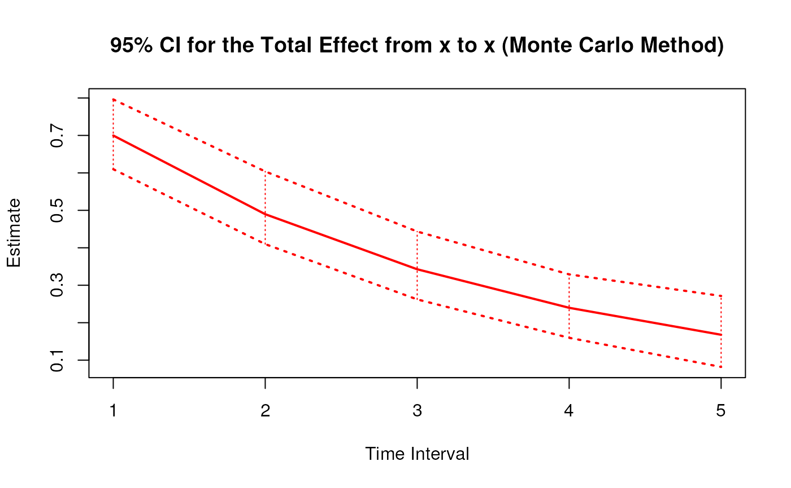
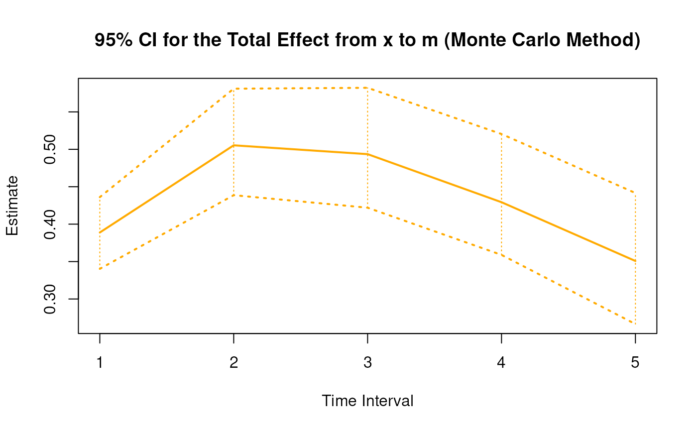
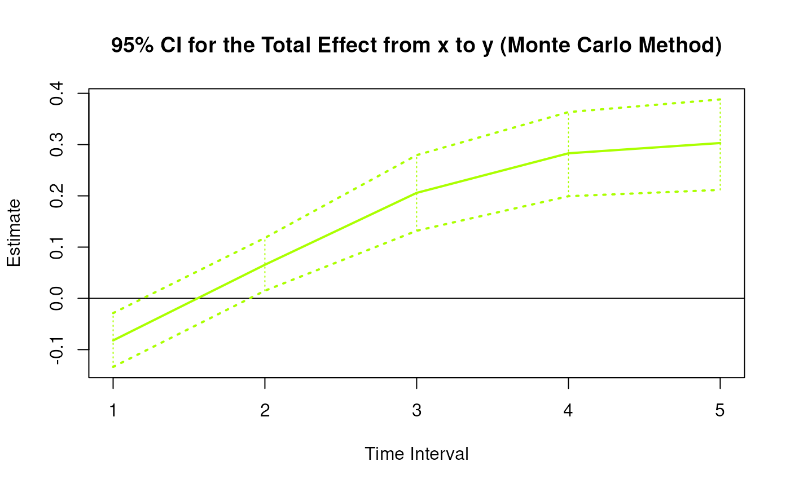
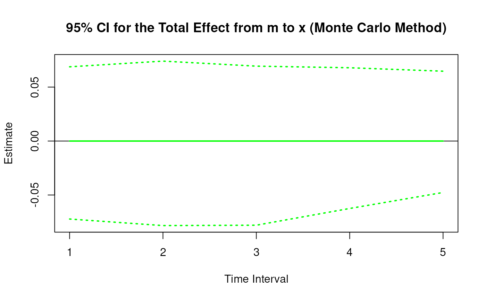
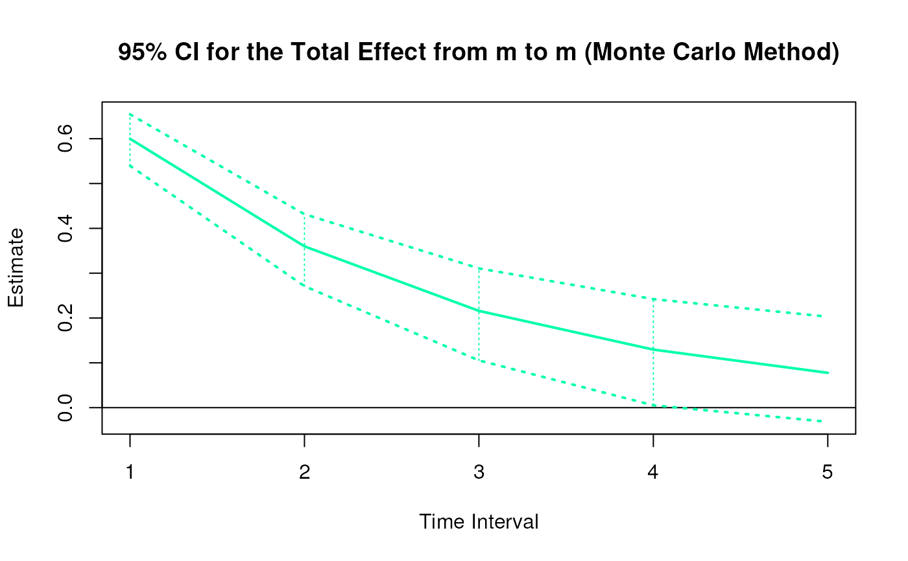
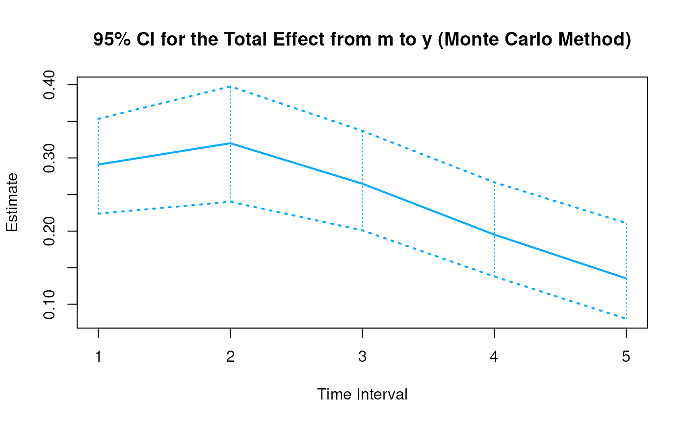
 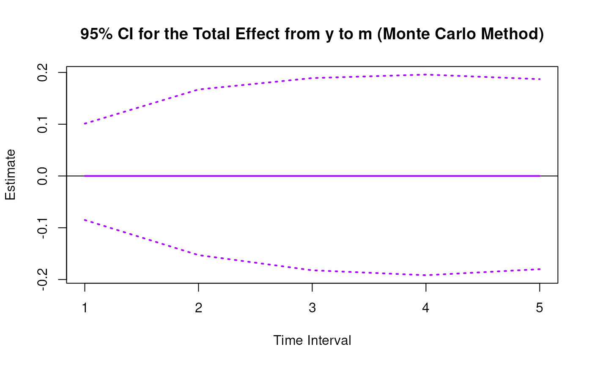
# Methods -------------------------------------------------------------------
# MCBetaStd has a number of methods including
# print, summary, confint, and plot
print(mc)
#>
#> Total, Direct, and Indirect Effects
#>
#> $`1`
#> interval est se R 2.5% 97.5%
#> from x to x 1 0.6998 0.0458 100 0.6098 0.7961
#> from x to m 1 0.6418 0.0646 100 0.5163 0.7617
#> from x to y 1 -0.0949 0.0313 100 -0.1540 -0.0331
#> from m to x 1 0.0000 0.0331 100 -0.0712 0.0674
#> from m to m 1 0.5999 0.0323 100 0.5396 0.6545
#> from m to y 1 0.2954 0.0362 100 0.2230 0.3596
#> from y to x 1 0.0000 0.0487 100 -0.0904 0.0953
#> from y to m 1 0.0000 0.0430 100 -0.0755 0.0923
#> from y to y 1 0.5001 0.0265 100 0.4555 0.5554
#>
#> $`2`
#> interval est se R 2.5% 97.5%
#> from x to x 2 0.4897 0.0530 100 0.4098 0.6038
#> from x to m 2 0.8341 0.0911 100 0.6772 1.0196
#> from x to y 2 0.0758 0.0338 100 0.0171 0.1308
#> from m to x 2 0.0000 0.0382 100 -0.0769 0.0707
#> from m to m 2 0.3599 0.0482 100 0.2711 0.4316
#> from m to y 2 0.3249 0.0448 100 0.2446 0.4047
#> from y to x 2 0.0000 0.0588 100 -0.1090 0.1172
#> from y to m 2 0.0000 0.0698 100 -0.1322 0.1546
#> from y to y 2 0.2501 0.0307 100 0.1958 0.3056
#>
#> $`3`
#> interval est se R 2.5% 97.5%
#> from x to x 3 0.3427 0.0528 100 0.2622 0.4434
#> from x to m 3 0.8147 0.1027 100 0.6322 1.0309
#> from x to y 3 0.2378 0.0402 100 0.1605 0.3165
#> from m to x 3 0.0000 0.0369 100 -0.0754 0.0636
#> from m to m 3 0.2159 0.0565 100 0.1054 0.3108
#> from m to y 3 0.2688 0.0436 100 0.1984 0.3406
#> from y to x 3 0.0000 0.0540 100 -0.1050 0.1077
#> from y to m 3 0.0000 0.0848 100 -0.1632 0.1748
#> from y to y 3 0.1251 0.0288 100 0.0732 0.1724
#>
#> $`4`
#> interval est se R 2.5% 97.5%
#> from x to x 4 0.2398 0.0514 100 0.1597 0.3290
#> from x to m 4 0.7086 0.1060 100 0.5210 0.9284
#> from x to y 4 0.3271 0.0485 100 0.2361 0.4205
#> from m to x 4 0.0000 0.0342 100 -0.0616 0.0638
#> from m to m 4 0.1295 0.0593 100 0.0053 0.2421
#> from m to y 4 0.1982 0.0394 100 0.1362 0.2762
#> from y to x 4 0.0000 0.0447 100 -0.0909 0.0890
#> from y to m 4 0.0000 0.0880 100 -0.1702 0.1808
#> from y to y 4 0.0625 0.0304 100 0.0085 0.1241
#>
#> $`5`
#> interval est se R 2.5% 97.5%
#> from x to x 5 0.1678 0.0499 100 0.0819 0.2714
#> from x to m 5 0.5790 0.1045 100 0.4017 0.8030
#> from x to y 5 0.3501 0.0538 100 0.2495 0.4438
#> from m to x 5 0.0000 0.0307 100 -0.0473 0.0624
#> from m to m 5 0.0777 0.0586 100 -0.0316 0.2029
#> from m to y 5 0.1374 0.0350 100 0.0809 0.2163
#> from y to x 5 0.0000 0.0352 100 -0.0729 0.0716
#> from y to m 5 0.0000 0.0828 100 -0.1591 0.1726
#> from y to y 5 0.0313 0.0342 100 -0.0316 0.0922
#>
summary(mc)
#> effect interval est se R 2.5% 97.5%
#> 1 from x to x 1 0.69977250 0.04584153 100 0.609800263 0.79613691
#> 2 from x to m 1 0.64179702 0.06455088 100 0.516274801 0.76173850
#> 3 from x to y 1 -0.09485636 0.03125846 100 -0.153976685 -0.03307002
#> 4 from m to x 1 0.00000000 0.03308626 100 -0.071160115 0.06741298
#> 5 from m to m 1 0.59989538 0.03228086 100 0.539629131 0.65446006
#> 6 from m to y 1 0.29538149 0.03616902 100 0.222974003 0.35962822
#> 7 from y to x 1 0.00000000 0.04867141 100 -0.090379148 0.09526816
#> 8 from y to m 1 0.00000000 0.04304429 100 -0.075526353 0.09227775
#> 9 from y to y 1 0.50007360 0.02653763 100 0.455466431 0.55535984
#> 10 from x to x 2 0.48968155 0.05301609 100 0.409792609 0.60379349
#> 11 from x to m 2 0.83412297 0.09108845 100 0.677237062 1.01963224
#> 12 from x to y 2 0.07576192 0.03379508 100 0.017074143 0.13076615
#> 13 from m to x 2 0.00000000 0.03818796 100 -0.076940966 0.07067114
#> 14 from m to m 2 0.35987447 0.04819742 100 0.271065357 0.43159309
#> 15 from m to y 2 0.32491048 0.04483583 100 0.244570252 0.40470686
#> 16 from y to x 2 0.00000000 0.05878179 100 -0.108991798 0.11720708
#> 17 from y to m 2 0.00000000 0.06978610 100 -0.132159520 0.15457682
#> 18 from y to y 2 0.25007360 0.03074378 100 0.195824888 0.30557324
#> 19 from x to x 3 0.34266568 0.05281164 100 0.262187269 0.44344399
#> 20 from x to m 3 0.81466268 0.10273276 100 0.632169847 1.03086567
#> 21 from x to y 3 0.23782161 0.04023737 100 0.160464703 0.31654446
#> 22 from m to x 3 0.00000000 0.03690940 100 -0.075373075 0.06363969
#> 23 from m to m 3 0.21588703 0.05650342 100 0.105419527 0.31077230
#> 24 from m to y 3 0.26877941 0.04355656 100 0.198441575 0.34057083
#> 25 from y to x 3 0.00000000 0.05399259 100 -0.105005289 0.10767802
#> 26 from y to m 3 0.00000000 0.08475579 100 -0.163158127 0.17477904
#> 27 from y to y 3 0.12505520 0.02884224 100 0.073229218 0.17243310
#> 28 from x to x 4 0.23978802 0.05135378 100 0.159681273 0.32901570
#> 29 from x to m 4 0.70863419 0.10596853 100 0.521043112 0.92836517
#> 30 from x to y 4 0.32706056 0.04851889 100 0.236059297 0.42046594
#> 31 from m to x 4 0.00000000 0.03419947 100 -0.061579620 0.06382636
#> 32 from m to m 4 0.12950963 0.05928525 100 0.005256487 0.24206241
#> 33 from m to y 4 0.19817852 0.03936412 100 0.136156997 0.27624536
#> 34 from y to x 4 0.00000000 0.04470452 100 -0.090869692 0.08896539
#> 35 from y to m 4 0.00000000 0.08798067 100 -0.170153743 0.18079569
#> 36 from y to y 4 0.06253681 0.03037461 100 0.008546347 0.12408688
#> 37 from x to x 5 0.16779706 0.04985991 100 0.081882464 0.27142605
#> 38 from x to m 5 0.57900162 0.10449604 100 0.401739538 0.80304736
#> 39 from x to y 5 0.35012636 0.05379593 100 0.249535340 0.44379646
#> 40 from m to x 5 0.00000000 0.03069954 100 -0.047313304 0.06238245
#> 41 from m to m 5 0.07769223 0.05857726 100 -0.031648320 0.20294748
#> 42 from m to y 5 0.13735859 0.03503628 100 0.080937688 0.21626795
#> 43 from y to x 5 0.00000000 0.03520209 100 -0.072874312 0.07162254
#> 44 from y to m 5 0.00000000 0.08279416 100 -0.159106687 0.17260290
#> 45 from y to y 5 0.03127301 0.03419857 100 -0.031634742 0.09222349
confint(mc, level = 0.95)
#> effect interval 2.5 % 97.5 %
#> 1 from x to x 1 0.60980026 0.79613691
#> 2 from x to m 1 0.51627480 0.76173850
#> 3 from x to y 1 -0.15397668 -0.03307002
#> 4 from x to x 2 0.40979261 0.60379349
#> 5 from x to m 2 0.67723706 1.01963224
#> 6 from x to y 2 0.01707414 0.13076615
#> 7 from x to x 3 0.26218727 0.44344399
#> 8 from x to m 3 0.63216985 1.03086567
#> 9 from x to y 3 0.16046470 0.31654446
#> 10 from x to x 4 0.15968127 0.32901570
#> 11 from x to m 4 0.52104311 0.92836517
#> 12 from x to y 4 0.23605930 0.42046594
#> 13 from x to x 5 0.08188246 0.27142605
#> 14 from x to m 5 0.40173954 0.80304736
#> 15 from x to y 5 0.24953534 0.44379646
plot(mc)
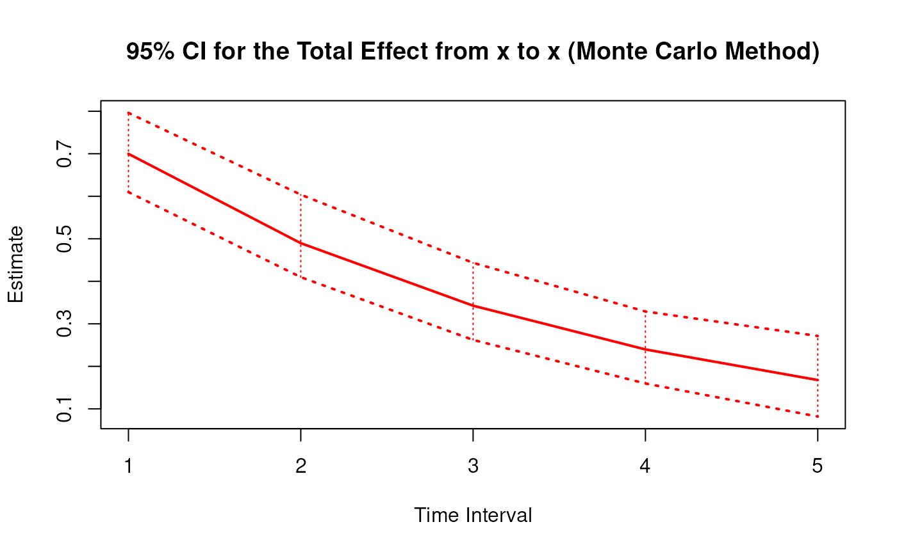
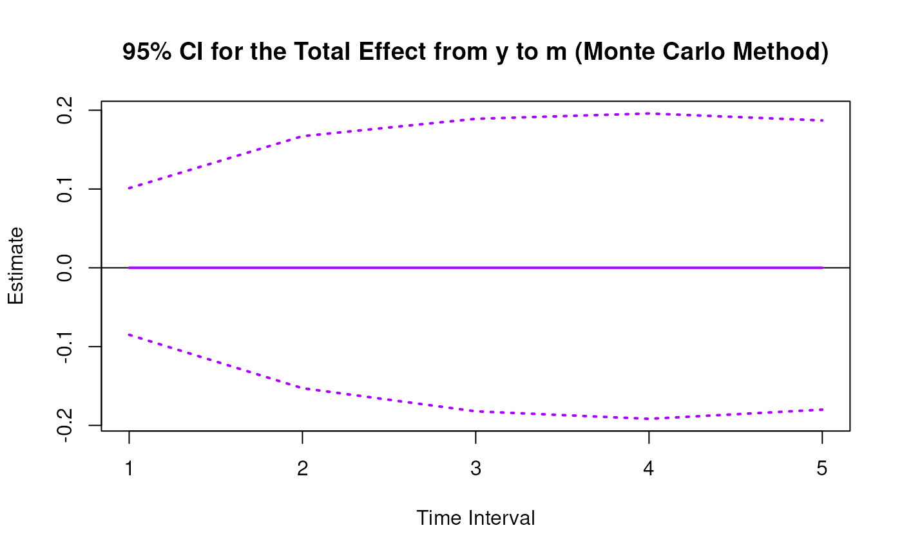
# Methods -------------------------------------------------------------------
# MCBetaStd has a number of methods including
# print, summary, confint, and plot
print(mc)
#>
#> Total, Direct, and Indirect Effects
#>
#> $`1`
#> interval est se R 2.5% 97.5%
#> from x to x 1 0.6998 0.0458 100 0.6098 0.7961
#> from x to m 1 0.6418 0.0646 100 0.5163 0.7617
#> from x to y 1 -0.0949 0.0313 100 -0.1540 -0.0331
#> from m to x 1 0.0000 0.0331 100 -0.0712 0.0674
#> from m to m 1 0.5999 0.0323 100 0.5396 0.6545
#> from m to y 1 0.2954 0.0362 100 0.2230 0.3596
#> from y to x 1 0.0000 0.0487 100 -0.0904 0.0953
#> from y to m 1 0.0000 0.0430 100 -0.0755 0.0923
#> from y to y 1 0.5001 0.0265 100 0.4555 0.5554
#>
#> $`2`
#> interval est se R 2.5% 97.5%
#> from x to x 2 0.4897 0.0530 100 0.4098 0.6038
#> from x to m 2 0.8341 0.0911 100 0.6772 1.0196
#> from x to y 2 0.0758 0.0338 100 0.0171 0.1308
#> from m to x 2 0.0000 0.0382 100 -0.0769 0.0707
#> from m to m 2 0.3599 0.0482 100 0.2711 0.4316
#> from m to y 2 0.3249 0.0448 100 0.2446 0.4047
#> from y to x 2 0.0000 0.0588 100 -0.1090 0.1172
#> from y to m 2 0.0000 0.0698 100 -0.1322 0.1546
#> from y to y 2 0.2501 0.0307 100 0.1958 0.3056
#>
#> $`3`
#> interval est se R 2.5% 97.5%
#> from x to x 3 0.3427 0.0528 100 0.2622 0.4434
#> from x to m 3 0.8147 0.1027 100 0.6322 1.0309
#> from x to y 3 0.2378 0.0402 100 0.1605 0.3165
#> from m to x 3 0.0000 0.0369 100 -0.0754 0.0636
#> from m to m 3 0.2159 0.0565 100 0.1054 0.3108
#> from m to y 3 0.2688 0.0436 100 0.1984 0.3406
#> from y to x 3 0.0000 0.0540 100 -0.1050 0.1077
#> from y to m 3 0.0000 0.0848 100 -0.1632 0.1748
#> from y to y 3 0.1251 0.0288 100 0.0732 0.1724
#>
#> $`4`
#> interval est se R 2.5% 97.5%
#> from x to x 4 0.2398 0.0514 100 0.1597 0.3290
#> from x to m 4 0.7086 0.1060 100 0.5210 0.9284
#> from x to y 4 0.3271 0.0485 100 0.2361 0.4205
#> from m to x 4 0.0000 0.0342 100 -0.0616 0.0638
#> from m to m 4 0.1295 0.0593 100 0.0053 0.2421
#> from m to y 4 0.1982 0.0394 100 0.1362 0.2762
#> from y to x 4 0.0000 0.0447 100 -0.0909 0.0890
#> from y to m 4 0.0000 0.0880 100 -0.1702 0.1808
#> from y to y 4 0.0625 0.0304 100 0.0085 0.1241
#>
#> $`5`
#> interval est se R 2.5% 97.5%
#> from x to x 5 0.1678 0.0499 100 0.0819 0.2714
#> from x to m 5 0.5790 0.1045 100 0.4017 0.8030
#> from x to y 5 0.3501 0.0538 100 0.2495 0.4438
#> from m to x 5 0.0000 0.0307 100 -0.0473 0.0624
#> from m to m 5 0.0777 0.0586 100 -0.0316 0.2029
#> from m to y 5 0.1374 0.0350 100 0.0809 0.2163
#> from y to x 5 0.0000 0.0352 100 -0.0729 0.0716
#> from y to m 5 0.0000 0.0828 100 -0.1591 0.1726
#> from y to y 5 0.0313 0.0342 100 -0.0316 0.0922
#>
summary(mc)
#> effect interval est se R 2.5% 97.5%
#> 1 from x to x 1 0.69977250 0.04584153 100 0.609800263 0.79613691
#> 2 from x to m 1 0.64179702 0.06455088 100 0.516274801 0.76173850
#> 3 from x to y 1 -0.09485636 0.03125846 100 -0.153976685 -0.03307002
#> 4 from m to x 1 0.00000000 0.03308626 100 -0.071160115 0.06741298
#> 5 from m to m 1 0.59989538 0.03228086 100 0.539629131 0.65446006
#> 6 from m to y 1 0.29538149 0.03616902 100 0.222974003 0.35962822
#> 7 from y to x 1 0.00000000 0.04867141 100 -0.090379148 0.09526816
#> 8 from y to m 1 0.00000000 0.04304429 100 -0.075526353 0.09227775
#> 9 from y to y 1 0.50007360 0.02653763 100 0.455466431 0.55535984
#> 10 from x to x 2 0.48968155 0.05301609 100 0.409792609 0.60379349
#> 11 from x to m 2 0.83412297 0.09108845 100 0.677237062 1.01963224
#> 12 from x to y 2 0.07576192 0.03379508 100 0.017074143 0.13076615
#> 13 from m to x 2 0.00000000 0.03818796 100 -0.076940966 0.07067114
#> 14 from m to m 2 0.35987447 0.04819742 100 0.271065357 0.43159309
#> 15 from m to y 2 0.32491048 0.04483583 100 0.244570252 0.40470686
#> 16 from y to x 2 0.00000000 0.05878179 100 -0.108991798 0.11720708
#> 17 from y to m 2 0.00000000 0.06978610 100 -0.132159520 0.15457682
#> 18 from y to y 2 0.25007360 0.03074378 100 0.195824888 0.30557324
#> 19 from x to x 3 0.34266568 0.05281164 100 0.262187269 0.44344399
#> 20 from x to m 3 0.81466268 0.10273276 100 0.632169847 1.03086567
#> 21 from x to y 3 0.23782161 0.04023737 100 0.160464703 0.31654446
#> 22 from m to x 3 0.00000000 0.03690940 100 -0.075373075 0.06363969
#> 23 from m to m 3 0.21588703 0.05650342 100 0.105419527 0.31077230
#> 24 from m to y 3 0.26877941 0.04355656 100 0.198441575 0.34057083
#> 25 from y to x 3 0.00000000 0.05399259 100 -0.105005289 0.10767802
#> 26 from y to m 3 0.00000000 0.08475579 100 -0.163158127 0.17477904
#> 27 from y to y 3 0.12505520 0.02884224 100 0.073229218 0.17243310
#> 28 from x to x 4 0.23978802 0.05135378 100 0.159681273 0.32901570
#> 29 from x to m 4 0.70863419 0.10596853 100 0.521043112 0.92836517
#> 30 from x to y 4 0.32706056 0.04851889 100 0.236059297 0.42046594
#> 31 from m to x 4 0.00000000 0.03419947 100 -0.061579620 0.06382636
#> 32 from m to m 4 0.12950963 0.05928525 100 0.005256487 0.24206241
#> 33 from m to y 4 0.19817852 0.03936412 100 0.136156997 0.27624536
#> 34 from y to x 4 0.00000000 0.04470452 100 -0.090869692 0.08896539
#> 35 from y to m 4 0.00000000 0.08798067 100 -0.170153743 0.18079569
#> 36 from y to y 4 0.06253681 0.03037461 100 0.008546347 0.12408688
#> 37 from x to x 5 0.16779706 0.04985991 100 0.081882464 0.27142605
#> 38 from x to m 5 0.57900162 0.10449604 100 0.401739538 0.80304736
#> 39 from x to y 5 0.35012636 0.05379593 100 0.249535340 0.44379646
#> 40 from m to x 5 0.00000000 0.03069954 100 -0.047313304 0.06238245
#> 41 from m to m 5 0.07769223 0.05857726 100 -0.031648320 0.20294748
#> 42 from m to y 5 0.13735859 0.03503628 100 0.080937688 0.21626795
#> 43 from y to x 5 0.00000000 0.03520209 100 -0.072874312 0.07162254
#> 44 from y to m 5 0.00000000 0.08279416 100 -0.159106687 0.17260290
#> 45 from y to y 5 0.03127301 0.03419857 100 -0.031634742 0.09222349
confint(mc, level = 0.95)
#> effect interval 2.5 % 97.5 %
#> 1 from x to x 1 0.60980026 0.79613691
#> 2 from x to m 1 0.51627480 0.76173850
#> 3 from x to y 1 -0.15397668 -0.03307002
#> 4 from x to x 2 0.40979261 0.60379349
#> 5 from x to m 2 0.67723706 1.01963224
#> 6 from x to y 2 0.01707414 0.13076615
#> 7 from x to x 3 0.26218727 0.44344399
#> 8 from x to m 3 0.63216985 1.03086567
#> 9 from x to y 3 0.16046470 0.31654446
#> 10 from x to x 4 0.15968127 0.32901570
#> 11 from x to m 4 0.52104311 0.92836517
#> 12 from x to y 4 0.23605930 0.42046594
#> 13 from x to x 5 0.08188246 0.27142605
#> 14 from x to m 5 0.40173954 0.80304736
#> 15 from x to y 5 0.24953534 0.44379646
plot(mc)
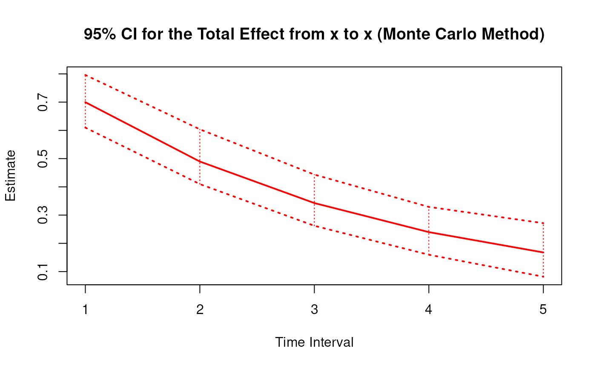
 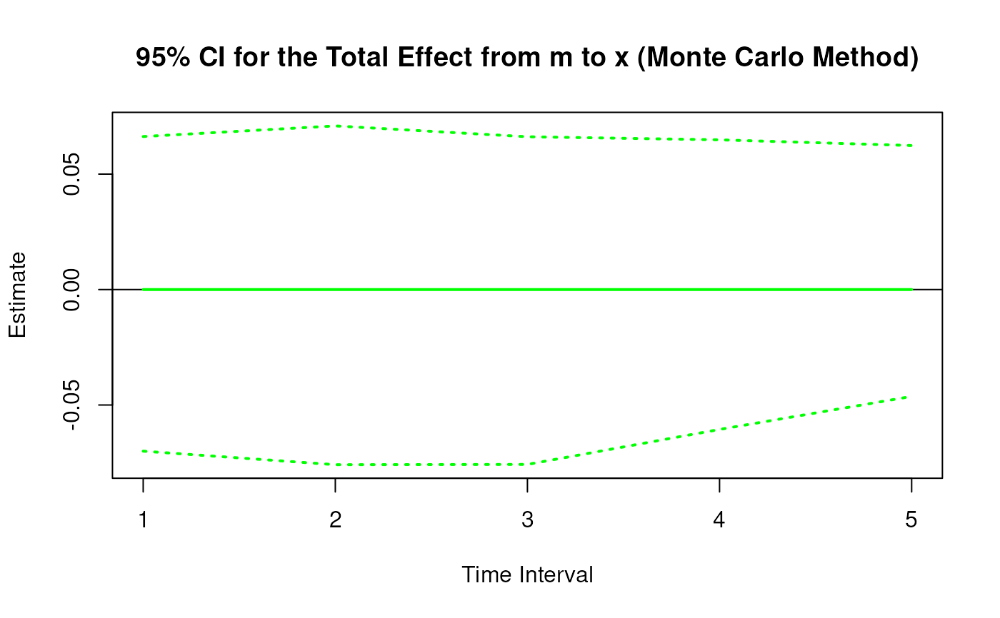
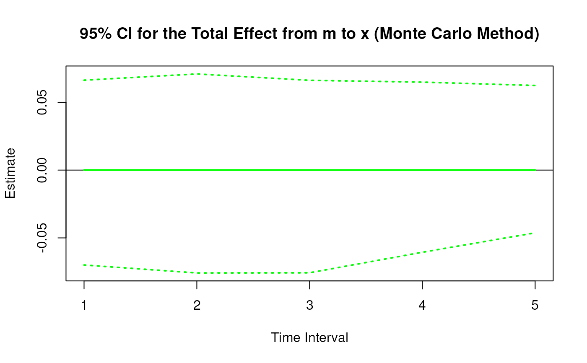
 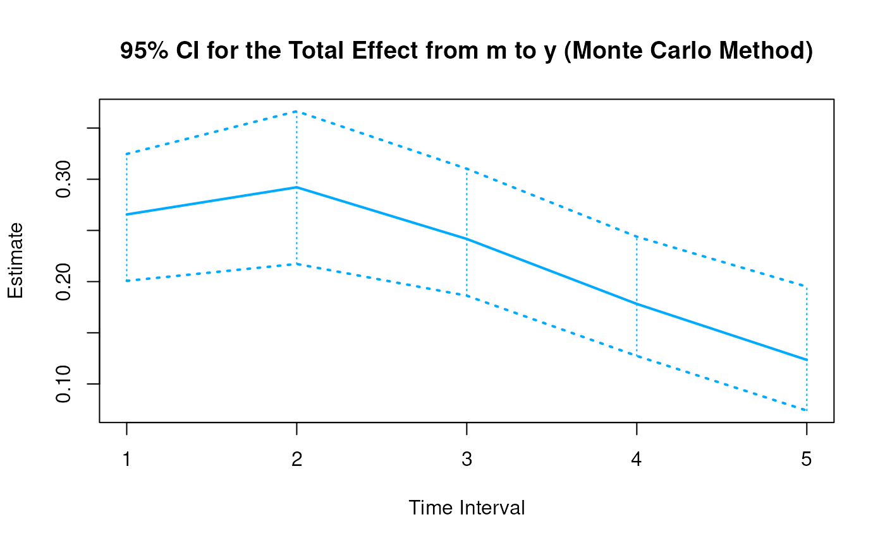
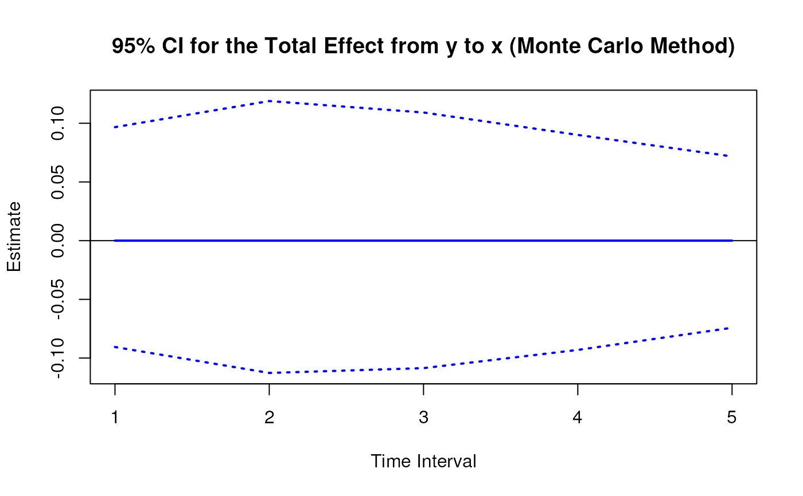
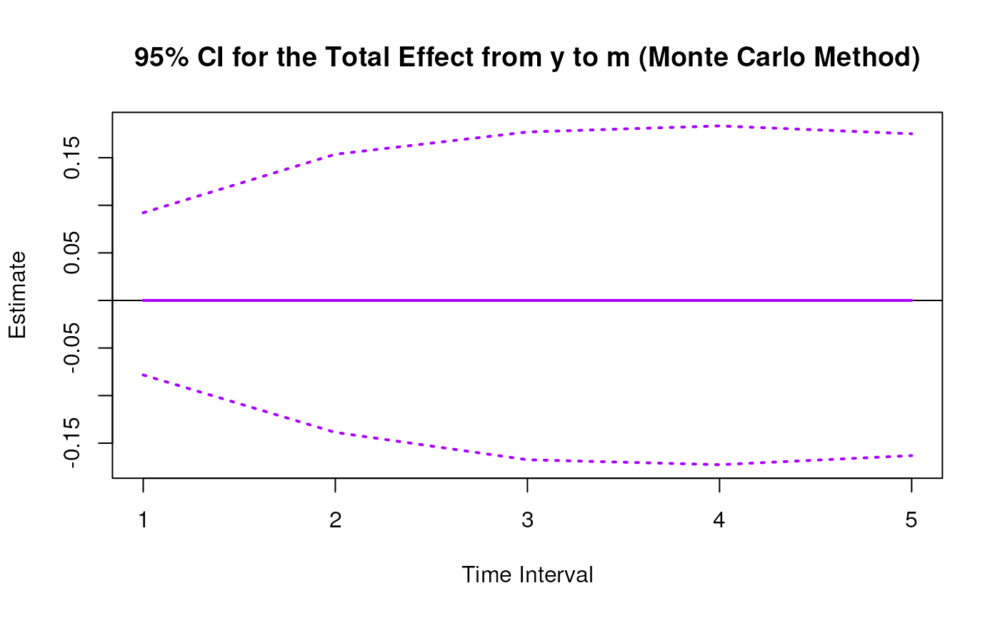
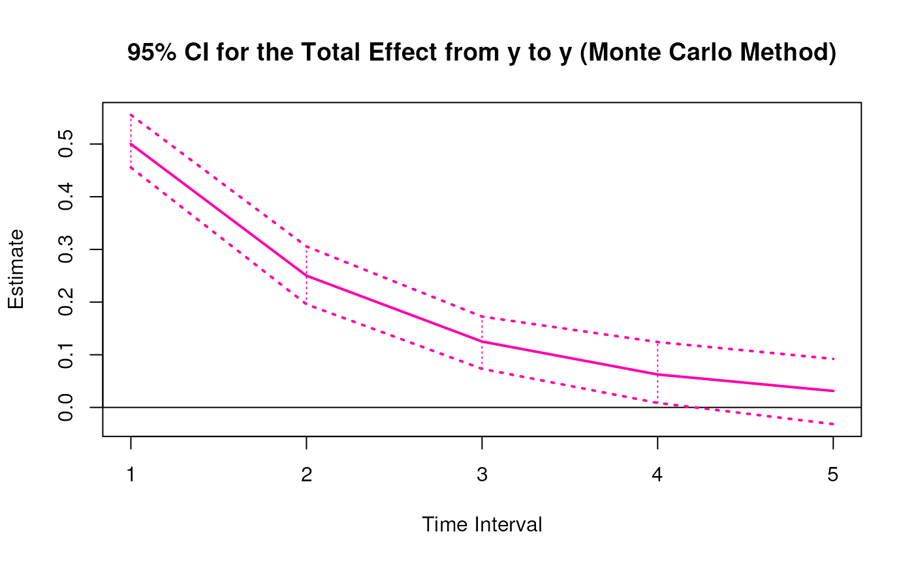
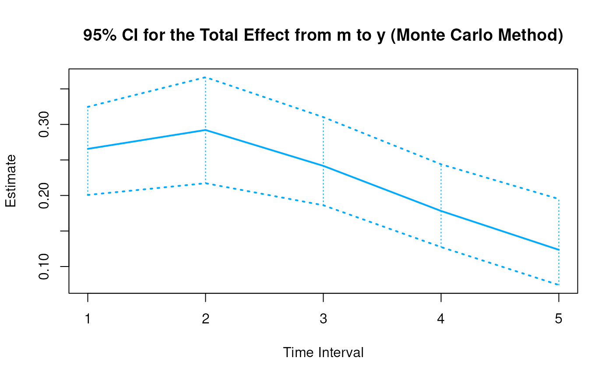
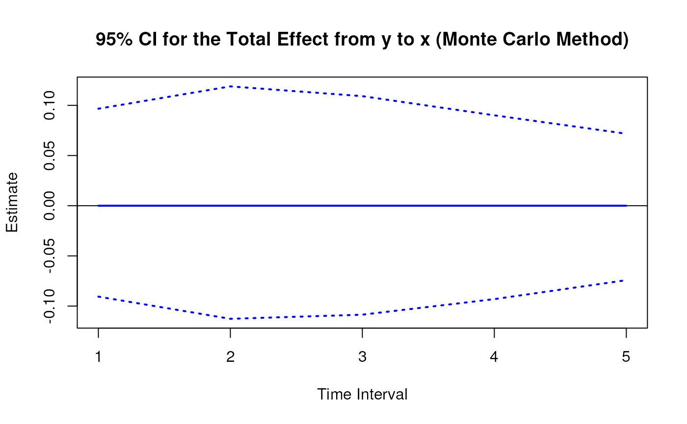
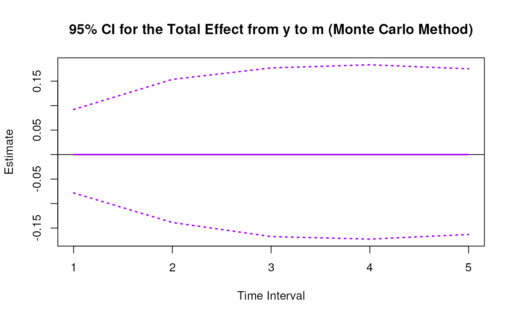
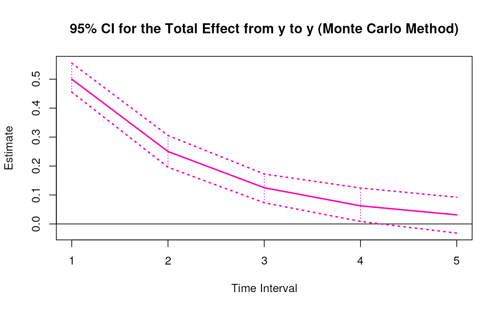